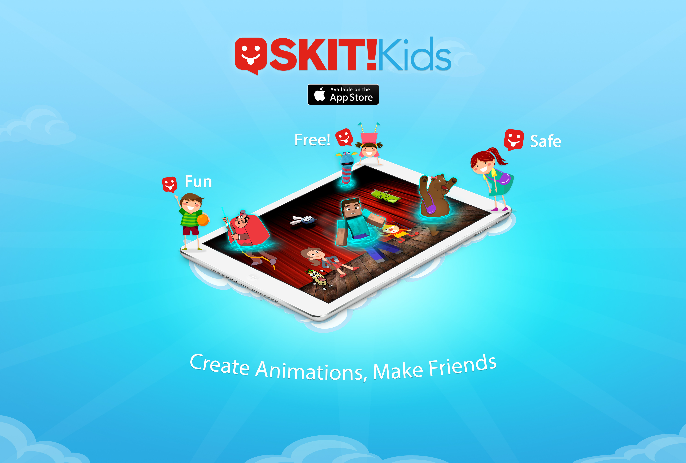
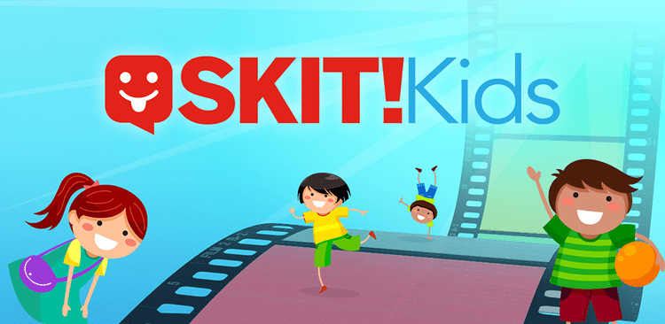
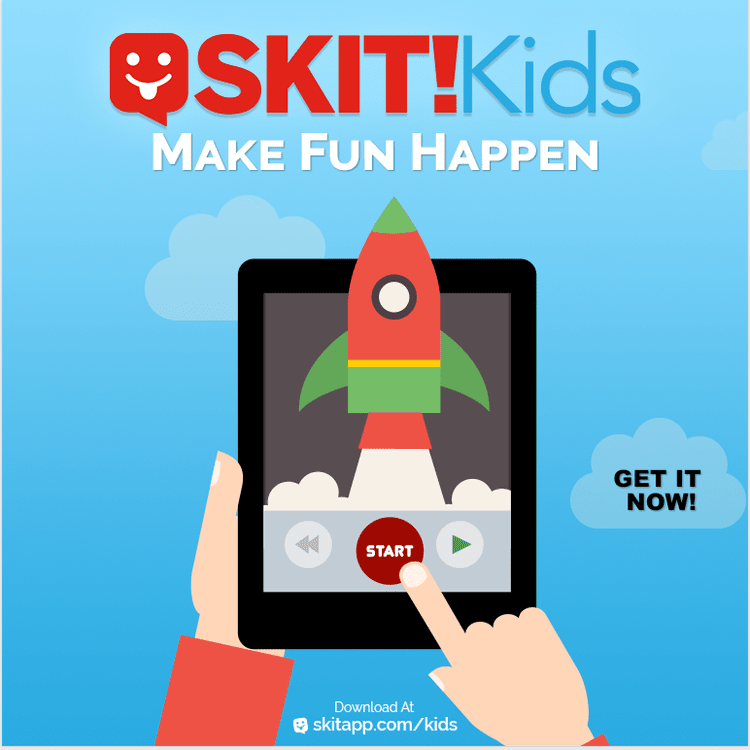
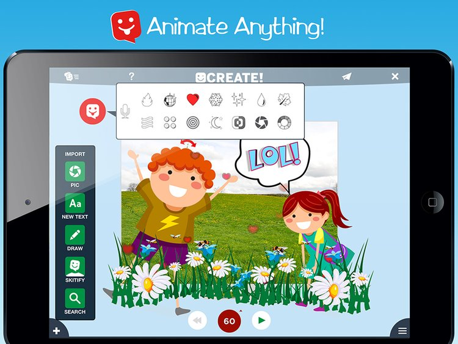
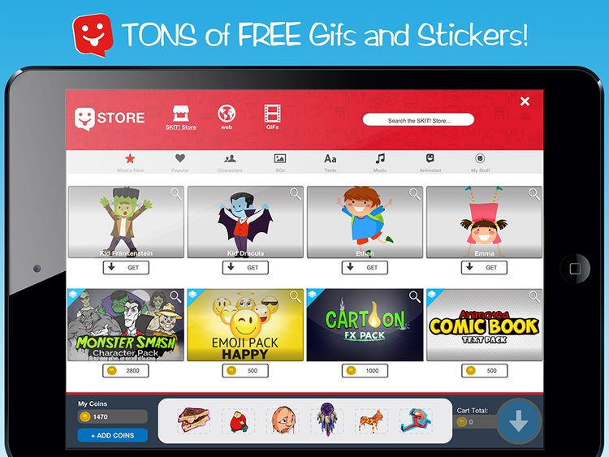
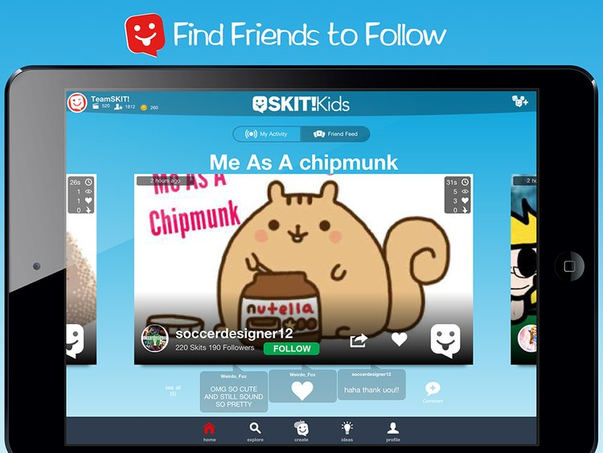
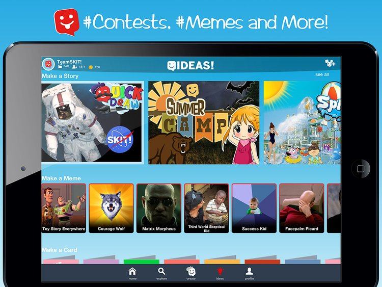
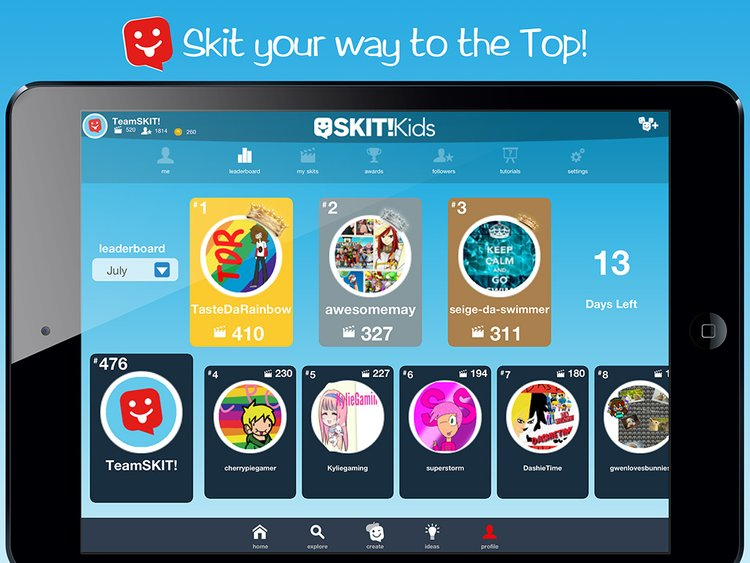
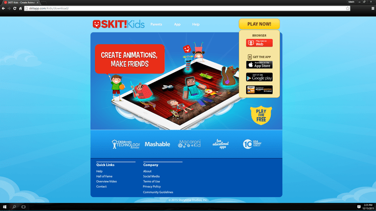

Skit! was a creative app for kids: pick characters, set the scene, add music and animation,
and end up with a skit you made yourself. I led design on Skit 2.0 across iOS, Android, and
web at Storytime Studios.
RoleDesign Director
CompanyStorytime Studios
PlatformiOS · Android · Web
Status● Shipped · 2015

01 · The product
A creative platform built for storytelling.
Skit! gave kids the pieces to make their own animated skits. They picked characters,
dropped props into scenes, layered in music and animation, and ended up with something
they'd made themselves. The 2.0 release was a full rebuild: refreshed visual system,
tighter creation flow, new features designed to keep kids coming back to make more.

The pieces of a skit: characters, scenes, music, animation. Picked, placed, and shared.02 · What I designed
Design Director on Skit 2.0.
As Design Director at Storytime, I led design across mobile, tablet, and web for the 2.0
release. The work covered both the surface and the systems underneath:
Product design. Personas, user flows, wireframes, mockups, and the design system for Skit 2.0.
Feature design. Achievements, weekly challenges, magic touch, and the supporting interactions that pulled kids back into the loop.
Content production. Characters, objects, text, music, and animation, set up and integrated into the app.
In-app economy. Micro-transactions and the balance work that kept the economy fair across kid and parent expectations.
Visual QA. Making sure every element met the bar before publish.
Storytelling. Presentation videos for stakeholders and investors.

An invite moment from the app. The 2.0 visual system leaned warm and approachable, with type and color tuned for kids and the parents looking over their shoulders.03 · Selected screens
The app in real life.
Skit! lived on iPads in classrooms and bedrooms, on phones in backseats, and on the web
for parents and teachers checking in. A handful of moments from real-world use.






04 · The buzz
Built for kids. Trusted by parents.
Three commitments shaped how the team thought about everything we shipped:
Privacy
COPPA Compliant.
We never collected a child's personal information without parental consent. Privacy was the floor, not the feature.
Reception
4.5 / 5 stars.
Skit! Kids was rated 4.5 out of 5 in the major app stores. Parents and teachers rated it as highly as the kids did.
Support
Personal touch.
Team Skit! worked together to make sure every skitter was having fun. Real humans behind the app, not a help desk script.
Next case study
Multi-platform · 2019
IKON. Three surfaces, one brand activation.
A six-week brand activation built on IKON, the gaming challenge platform. Co-branded
landing page, dedicated desktop application, Twitch extension.